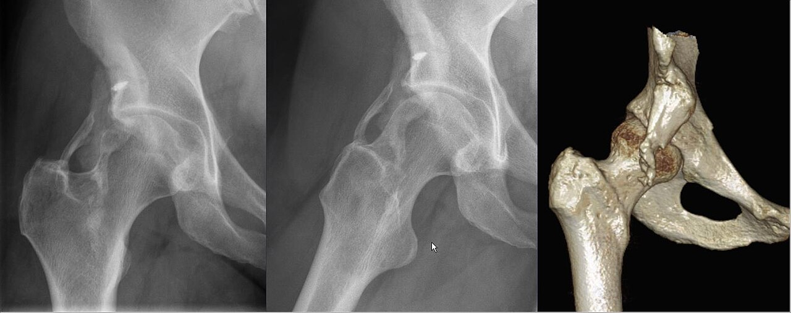

Ficha del catálogo
Miositis osificante
- Sistema
- Óseo
- Modalidad
- TC
- Región
- Muslo y brazo
- Dificultad
- Avanzado
La miositis osificante es una lesión seudotumoral en la que se forma hueso dentro de un músculo tras un traumatismo, aunque en ocasiones no hay antecedente reconocido. Aparece sobre todo en jóvenes deportistas en el cuádriceps y en el braquial anterior. Su importancia está en que en la fase temprana simula un sarcoma tanto en la imagen como en el estudio histológico, lo que ha motivado cirugías innecesarias. Reconocer su patrón de maduración evita ese error.
Técnica
Tomografía sin contraste con ventana ósea centrada en la masa palpable. La radiografía simple sirve de control evolutivo cuando la osificación ya es visible.
Qué observar
- Osificación periférica más madura que el centro de la lesión
- Centro de baja densidad rodeado por una cáscara ósea bien definida
- Banda de tejido no osificado que separa la lesión de la cortical del hueso vecino
- Ausencia de destrucción cortical y de reacción perióstica agresiva
- Aumento progresivo de la osificación en controles separados por semanas
- Edema muscular circundante llamativo en las fases iniciales
Hallazgos
Masa intramuscular con osificación de disposición periférica, centro menos denso y plano de separación respecto al hueso adyacente.
Perlas
El patrón zonal, con hueso maduro en la periferia y tejido inmaduro en el centro, es lo contrario de lo que se ve en los tumores óseos productores de matriz, donde la osificación es más densa en el interior. Repetir el estudio a las pocas semanas suele resolver la duda porque la lesión madura y se delimita.
Diagnóstico diferencial
- Osteosarcoma parostal
- Osificación densa central adherida a la cortical sin plano de separación.
- Sarcoma de partes blandas
- Masa con realce sólido y sin patrón de osificación periférica organizada.
- Hematoma calcificado
- Calcificación amorfa e irregular sin cáscara ósea estructurada.
Simuladores
- Osificación de inserciones tendinosas por sobrecarga
- Calcificaciones distróficas en pacientes encamados
- Osteocondroma con pedículo continuo con el hueso
Por modalidad
- RX
- Suficiente cuando la osificación periférica ya es evidente
- TC
- Muestra el patrón zonal mejor que ninguna otra técnica
- RM
- Puede alarmar en fase temprana por el edema y el realce difusos
Protocolo
Tomografía sin contraste de la masa y control evolutivo a las tres o cuatro semanas. Evitar la biopsia en fase inicial cuando el contexto clínico es compatible.
Clasificación
Errores frecuentes
- Biopsiar una lesión temprana y recibir un informe histológico que sugiere sarcoma
- Interpretar el edema muscular extenso como signo de malignidad
- No solicitar un control evolutivo que confirmaría la maduración

miositis osificante seudotumor patron zonal osificacion traumatismo musculo deportista